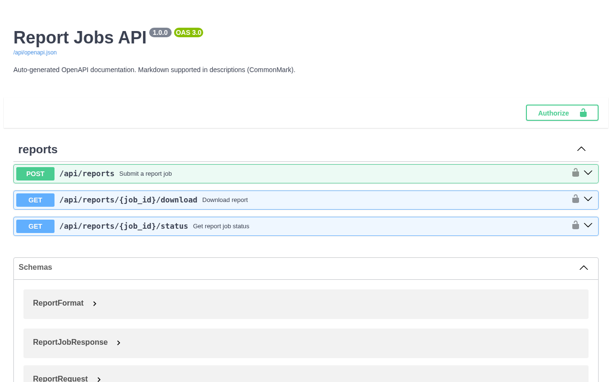
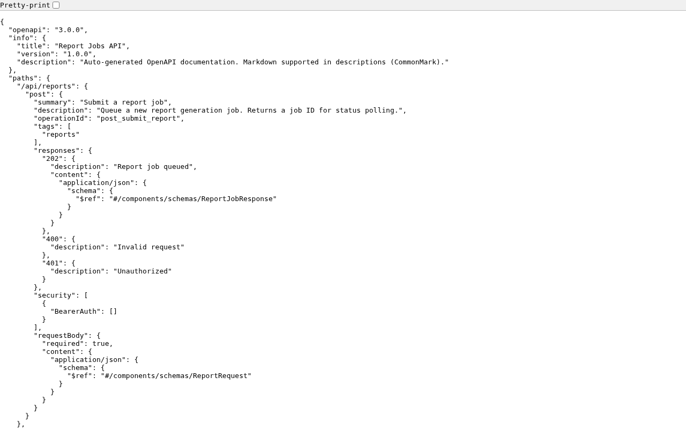

Deploy to Azure¶
This guide walks you through deploying azure-functions-openapi to Azure, step by step.
No Azure experience required.
Who this guide is for¶
You know Python and pip, and you can run the examples locally. Now you want to deploy to Azure Functions and verify both your API endpoints and OpenAPI docs endpoints.
What you are deploying¶
azure-functions-openapi adds OpenAPI support to Azure Functions Python apps.
In this guide, you deploy example apps that provide:
- Runtime API endpoints (
report_jobs,notification_request) - Generated OpenAPI documents at
/api/openapi.jsonand/api/openapi.yaml - Swagger UI at
/api/docs - Security-focused response headers on the docs page (
Content-Security-Policy,X-Frame-Options, HSTS, and others)
Azure concepts you need for this guide¶
New to Azure? Read Choose an Azure Functions Hosting Plan first.
| Term | What it means |
|---|---|
| Function App | Your deployed app in Azure. It can contain multiple HTTP functions. |
| Hosting plan | The compute model for your Function App (scaling, timeout, cost). |
| Resource Group | A container for related resources. Delete it to clean up everything. |
| Storage Account | Required by Azure Functions for runtime state and deployment internals. |
| Application Insights | Monitoring resource Azure creates for logs and telemetry. |
Recommended plan for this repo¶
| Default plan | Flex Consumption |
| Why | Cheapest entry point, scale-to-zero, and enough timeout for these examples. |
| Switch to Premium if | You need lower cold-start latency or large dependency footprints. |
Before you start¶
| Requirement | How to check | Install if missing |
|---|---|---|
| Azure account | portal.azure.com | Create free account |
| Azure CLI | az --version |
Install Azure CLI |
| Azure Functions Core Tools v4 | func --version |
Install Core Tools |
| Python 3.10-3.13 | python3 --version |
python.org |
| Package examples available | ls examples |
Clone this repo again if missing |
| Local example works | func start + local curl |
See README |
Verify locally first. If it fails locally, deployment troubleshooting is much harder.
Read these warnings before provisioning¶
- Storage account names are globally unique. Only lowercase letters and numbers, 3–24 characters.
- Use one region across all resources. Mixed regions can increase latency and failures.
- Deploy from the correct example directory. Publishing from the wrong folder gives wrong functions and wrong OpenAPI output.
- OpenAPI and Swagger routes are regular functions. If
auth_levelforopenapi.json,openapi.yaml, ordocsis not anonymous, directcurlchecks can return401/403. - Swagger UI route path is
/api/docsby default. If your host config or route prefix changes, docs URL changes too. - First publish is slower. Azure performs a remote build and installs dependencies.
Example 1: report_jobs¶
This is the primary guided path. It demonstrates Bearer token authentication, async job submission, status polling, and file download.
Step 1 — Create a Function App project from the example¶
The examples/ directories contain source modules, not standalone Azure Functions projects.
Copy the example into a new project directory that has the required scaffolding:
mkdir -p my-report-app
cp examples/report_jobs/function_app.py my-report-app/
# Create the required host.json (Azure Functions project root marker)
cat > my-report-app/host.json << 'EOF'
{
"version": "2.0",
"extensionBundle": {
"id": "Microsoft.Azure.Functions.ExtensionBundle",
"version": "[4.*, 5.0.0)"
}
}
EOF
cd my-report-app
Step 2 — Create and activate a virtual environment¶
Step 3 — Install dependencies¶
Step 4 — Verify local app starts¶
In another terminal, verify one endpoint:
curl -s -i -X POST http://localhost:7071/api/reports \
-H "Content-Type: application/json" \
-H "Authorization: Bearer test-token-123" \
-d '{"report_type":"monthly_sales","date_from":"2026-01-01","date_to":"2026-01-31"}'
Stop the local server with Ctrl+C.
Step 5 — Sign in to Azure and select subscription¶
az login
az account list -o table
SUBSCRIPTION_ID="$(az account show --query id -o tsv)"
az account set --subscription "$SUBSCRIPTION_ID"
Step 6 — Define deployment variables¶
RESOURCE_GROUP="rg-openapi-reports"
LOCATION="koreacentral"
STORAGE_ACCOUNT="stopenapirpt$(date +%s | tail -c 6)"
FUNCTIONAPP_NAME="func-openapi-reports"
BASE_URL="https://$FUNCTIONAPP_NAME.azurewebsites.net"
If needed, list Flex Consumption regions:
Step 7 — Create Azure resource group¶
Step 8 — Create storage account¶
az storage account create \
--name "$STORAGE_ACCOUNT" \
--resource-group "$RESOURCE_GROUP" \
--location "$LOCATION" \
--sku Standard_LRS
Step 9 — Create Function App on Flex Consumption¶
az functionapp create \
--name "$FUNCTIONAPP_NAME" \
--resource-group "$RESOURCE_GROUP" \
--storage-account "$STORAGE_ACCOUNT" \
--flexconsumption-location "$LOCATION" \
--runtime python \
--runtime-version 3.11
Step 10 — Publish the app¶
Expected function names include:
submit_report,get_report_status,download_reportopenapi_spec,openapi_yaml_spec,swagger_ui
Step 11 — Verify report API endpoints¶
Submit a report job:
curl -s -i -X POST "$BASE_URL/api/reports" \
-H "Content-Type: application/json" \
-H "Authorization: Bearer test-token-123" \
-d '{"report_type":"monthly_sales","date_from":"2026-01-01","date_to":"2026-01-31"}'
Check job status (replace <job_id> with the job_id from the response above):
Download report (available when status is completed):
Test unauthorized access (no Bearer token):
curl -s -i -X POST "$BASE_URL/api/reports" \
-H "Content-Type: application/json" \
-d '{"report_type":"monthly_sales","date_from":"2026-01-01","date_to":"2026-01-31"}'
Expected: 401 Unauthorized with {"error": "Missing or invalid Authorization header"}.
Step 12 — Verify OpenAPI JSON, YAML, and Swagger UI¶
OpenAPI JSON:
OpenAPI YAML:
Swagger UI HTML:
For Swagger UI, confirm these headers exist:
Content-Security-PolicyX-Content-Type-Options: nosniffX-Frame-Options: DENYStrict-Transport-Security
You can also verify visually by opening these URLs in a browser:

Swagger UI at /api/docs — lists all decorated endpoints with request/response schemas.

Generated OpenAPI spec at /api/openapi.json — always in sync with your @openapi decorators.
Step 13 — Optional: watch live logs¶
Press Ctrl+C to stop log streaming.
Example 2: notification_request¶
Try another example with request validation powered by azure-functions-validation.
Step 1 — Create a Function App project from the example¶
mkdir -p my-notification-app
cp examples/notification_request/function_app.py my-notification-app/
cat > my-notification-app/host.json << 'EOF'
{
"version": "2.0",
"extensionBundle": {
"id": "Microsoft.Azure.Functions.ExtensionBundle",
"version": "[4.*, 5.0.0)"
}
}
EOF
cd my-notification-app
Step 2 — Install dependencies¶
python3 -m venv .venv
source .venv/bin/activate
python -m pip install --upgrade pip
pip install azure-functions azure-functions-openapi azure-functions-validation pydantic
Step 3 — Set variables and create resources¶
RESOURCE_GROUP="rg-openapi-notifications"
LOCATION="koreacentral"
STORAGE_ACCOUNT="stopenapintf$(date +%s | tail -c 6)"
FUNCTIONAPP_NAME="func-openapi-notifications"
BASE_URL="https://$FUNCTIONAPP_NAME.azurewebsites.net"
az login
SUBSCRIPTION_ID="$(az account show --query id -o tsv)"
az account set --subscription "$SUBSCRIPTION_ID"
az group create --name "$RESOURCE_GROUP" --location "$LOCATION"
az storage account create \
--name "$STORAGE_ACCOUNT" \
--resource-group "$RESOURCE_GROUP" \
--location "$LOCATION" \
--sku Standard_LRS
az functionapp create \
--name "$FUNCTIONAPP_NAME" \
--resource-group "$RESOURCE_GROUP" \
--storage-account "$STORAGE_ACCOUNT" \
--flexconsumption-location "$LOCATION" \
--runtime python \
--runtime-version 3.11
Step 4 — Publish and verify endpoints¶
Send email notification:
curl -s -i -X POST "$BASE_URL/api/notifications/email" \
-H "Content-Type: application/json" \
-d '{"to":["alice@example.com"],"subject":"Test","body_text":"Hello from Azure"}'
Check notification status (replace <notification_id> with the ID from the response above):
Invalid payload (validation expected):
curl -s -i -X POST "$BASE_URL/api/notifications/email" \
-H "Content-Type: application/json" \
-d '{"to":[],"subject":"","body_text":""}'
Check docs endpoints:
curl -s -i "$BASE_URL/api/openapi.json"
curl -s -i "$BASE_URL/api/openapi.yaml"
curl -s -i "$BASE_URL/api/docs"
CLI spec generation¶
After deployment (or in CI), you can generate a static OpenAPI file directly from function_app.py.
From either example directory:
azure-functions-openapi generate \
--app-path ./function_app.py \
--format json \
--output ./openapi.json
Generate YAML instead:
azure-functions-openapi generate \
--app-path ./function_app.py \
--format yaml \
--output ./openapi.yaml
See docs/cli.md for full CLI options.
If you need a different plan¶
This guide uses Flex Consumption. For Premium or Dedicated commands, see Choose an Azure Functions Hosting Plan.
Premium (EP1)¶
az functionapp plan create \
--name "${FUNCTIONAPP_NAME}-plan" \
--resource-group "$RESOURCE_GROUP" \
--location "$LOCATION" \
--sku EP1 \
--is-linux
az functionapp create \
--name "$FUNCTIONAPP_NAME" \
--resource-group "$RESOURCE_GROUP" \
--storage-account "$STORAGE_ACCOUNT" \
--plan "${FUNCTIONAPP_NAME}-plan" \
--runtime python \
--runtime-version 3.11 \
--os-type Linux
Dedicated (B1)¶
az appservice plan create \
--name "${FUNCTIONAPP_NAME}-plan" \
--resource-group "$RESOURCE_GROUP" \
--location "$LOCATION" \
--sku B1 \
--is-linux
az functionapp create \
--name "$FUNCTIONAPP_NAME" \
--resource-group "$RESOURCE_GROUP" \
--storage-account "$STORAGE_ACCOUNT" \
--plan "${FUNCTIONAPP_NAME}-plan" \
--runtime python \
--runtime-version 3.11 \
--os-type Linux
Troubleshooting¶
Provisioning failed¶
| Symptom | Usually means | How to fix |
|---|---|---|
StorageAccountAlreadyTaken |
Storage account name is already used globally | Change the name suffix and retry |
LocationNotAvailableForResourceType |
Flex Consumption not available in selected region | Run az functionapp list-flexconsumption-locations -o table and choose a supported region |
SubscriptionNotFound |
Wrong subscription selected | Run az account list -o table, then set SUBSCRIPTION_ID again |
Deployment failed¶
| Symptom | Usually means | How to fix |
|---|---|---|
ModuleNotFoundError during publish |
Missing or incomplete dependencies | Reinstall with pip install azure-functions-openapi pydantic and republish |
Can't find app with name |
Function App not ready yet | Wait 30-60 seconds and rerun publish |
| Publish is very slow | First remote build is still running | Wait, then rerun once if it times out |
OpenAPI and Swagger issues¶
| Symptom | Usually means | How to fix |
|---|---|---|
404 on /api/docs |
Wrong route prefix or docs route changed | Verify app.route(route="docs") and host route prefix |
/api/openapi.json is empty or missing endpoints |
OpenAPI decorators are missing or not imported | Confirm functions use @openapi and app starts without import errors |
/api/openapi.yaml returns 401/403 |
Auth level is not anonymous on docs functions | Set auth_level=func.AuthLevel.ANONYMOUS for OpenAPI/docs routes and redeploy |
| Swagger UI loads but fails to fetch spec | Spec URL blocked or wrong path | Confirm /api/openapi.json is reachable directly with curl |
Missing hardening headers on /api/docs |
Docs response not coming from render_swagger_ui() |
Ensure docs function returns render_swagger_ui() and redeploy |
Logs and monitoring¶
func azure functionapp logstream "$FUNCTIONAPP_NAME"
az monitor app-insights events show \
--app "$FUNCTIONAPP_NAME" \
--resource-group "$RESOURCE_GROUP" \
--type requests \
--offset 1h
Before opening an issue¶
Share these outputs so maintainers can reproduce quickly:
az --version
func --version
python3 --version
pip show azure-functions-openapi
az functionapp show \
--name "$FUNCTIONAPP_NAME" \
--resource-group "$RESOURCE_GROUP" \
--query "{state:state,runtimeVersion:siteConfig.linuxFxVersion}"
curl -s -i "$BASE_URL/api/openapi.json"
curl -s -i "$BASE_URL/api/docs"
Clean up resources¶
Azure resources keep billing until deleted.
az group delete --name "rg-openapi-reports" --yes --no-wait
az group delete --name "rg-openapi-notifications" --yes --no-wait
Verify cleanup:
Sources¶
- Azure Functions Python quickstart
- Azure Functions Core Tools reference
- Azure Functions hosting options
- Flex Consumption plan
- Azure Functions app settings
See Also¶
- Choose an Azure Functions Hosting Plan — Plan selection guide with decision tree
- CLI guide
azure-functions-scaffoldazure-functions-validationazure-functions-doctorazure-functions-loggingazure-functions-langgraph